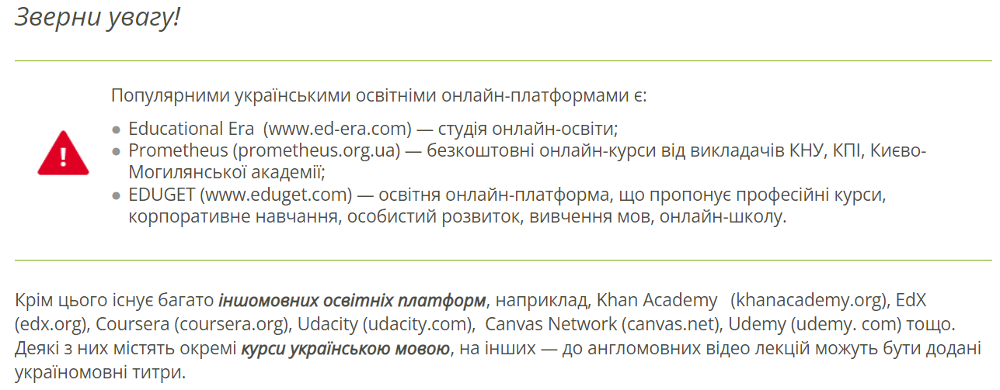
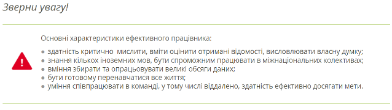

Перспективний напрям застосування Інтернету — навчання.
В Інтернеті є багато українських і зарубіжних сайтів, де можна знайти багато матеріалів, корисних для поглиблення й перевірки знань з різних предметів, розв’язування навчальних завдань, опанування знань, що виходять за межі шкільної програми, що сприяють саморозвитку або подальшій професійній діяльності. Багато таких ресурсів ви вивчали в попередніх класах — інтернет-енциклопедії, бібліотеки, словники, перекладачі тощо.
Популярності набули інтерактивні онлайн-курси з різних напрямів. З їх допомогою можна пройти навчання у викладачів провідних світових університетів, поспілкуватися на форумах зі студентством з інших країн, а також отримати свідоцтво про успішне проходження курсу. Доступ до таких курсів надають освітні онлайн-платформи. На них розміщено навчальні курси, підготовлені фахівцями з різних напрямів.
Приклад:
На платформі Khan Academy є україномовні курси з математики (uk.khanacademy.org), а окремі лекції на платформі Coursera (coursera.org) мають титри українською мовою. Деякі освітні онлайн-платформи пропонують курси з одного або кількох споріднених предметів. Так, на платформах Duolingo (uk.duolingo.com) та Lingualeо (lingualeo.com) пропонуються курси з вивчення іноземних мов, на платформі Logos IT Academy (lgs.lviv.ua) — з комп’ютерних наук тощо.
Приклад:
Можна скористатися ресурсами Інтернету, наприклад, Труд (www.trud.gov.ua), Work.ua (www.work .ua), Rabota.ua (rabota.ua) тощо.
Але перегляд сьогоднішніх вакансій не покаже перспективи на майбутнє, адже ми не маємо жодного уявлення про те, яким буде ринок праці в майбутньому.
На даний час лідируючі позиції займають медичні професії, інженерні, фахівці галузі інформаційних технологій і агрономи. Актуальними в ІТ-сфері є сьогодні та будуть залишатися у майбутньому професії програміста, веб-розробника, веб-дизайнера, адміністратора комп’ютерних мереж, аналітика баз даних, спеціаліста з питань комп’ютерної безпеки.
